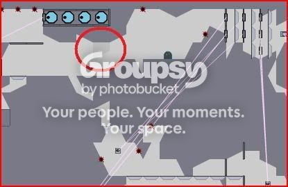
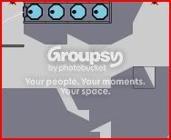
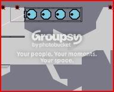

#20893 1 2008-07-26T23:32:46Z Losttortuga As you probablly know, Nreality offers the property of _color, which allows you to change the color and transparency of all objects.
This is why I was very, very confused and suprised to see a transparent tile when I open up
Reptar, King of the Ozone, by Shortshift, in Nreality.

See the red circle?
At first I thought it was some wierd kind of mass of one-ways, but I played the map and it turned out to be quite solid.
A little wierded out now, I went into the editor, to test my one-way theory. In the object editor, I couldn't delete it.
So I try the tile editor, and what I did was quite crazy.


So now I'm very confused.
It would be nice if people could open this up in Nreality and see if the same thing happens to them.
#455268 2 2008-07-26T23:42:38Z heatwave 
woah.
Can't test it out for my own reasons, but that is pretty weird.
#455270 3 2008-07-26T23:51:01Z PsychoSnail Weird. I'm not getting that.
#455272 4 2008-07-26T23:55:12Z Losttortuga It would probablly be a good thing to mention that I had been adding
||||0,_color,1.0.1.0.1.0.7.0;1,_color,1.0.1.0.1.0.7.0;2,_color,1.0.1.0.1.0.7.0;3,_color,1.0.1.0.1.0.7.0;4,_color,1.0.1.0.1.0.7.0;5,_color,1.0.1.0.1.0.7.0;6,_color,1.0.1.0.1.0.7.0;7,_color,1.0.1.0.1.0.7.0;8,_color,1.0.1.0.1.0.7.0;9,_color,1.0.1.0.1.0.7.0;10,_color,1.0.1.0.1.0.7.0;11,_color,1.0.1.0.1.0.7.0;12,_color,1.0.1.0.1.0.7.0;13,_color,1.0.1.0.1.0.7.0;14,_color,1.0.1.0.1.0.7.0;15,_color,1.0.1.0.1.0.7.0;16,_color,1.0.1.0.1.0.7.0;101,_color,1.0.1.0.1.0.7.0;102,_color,1.0.1.0.1.0.7.0;103,_color,1.0.1.0.1.0.7.0;121,_color,1.0.1.0.1.0.7.0|
to a couple of maps before this.
#455275 5 2008-07-26T23:59:02Z PsychoSnail I just added that code to the map data, and... whoa, I have what you've got there.
#455325 6 2008-07-27T09:59:03Z Eiturlyf I've been getting strange dark green tiles at random places all day now...
#455326 7 2008-07-27T10:27:45Z Unreality oh I found that it's a bug for setting floorguard (7) _color
I will fix that
edit: fixed
#455332 8 2008-07-27T14:00:24Z The Kitchen Sink Heh, that makes me think. New tiles in NReality. However, that would be WAAAAAY harder to do. For one, it would just be a lot harder to code. Objects seem relatively isolated, whereas tiles seem more hardcoded. For two, even if he did succeed, how would we make use of them? It's not easy to edit the tile code manually. It's very hard in fact. He'd have to make some sort of GUI for it, and that would also add to the already ridiculously hard. By a ridiculous amount.
I feel it's safe to say we won't be getting new Nreality tiles any time soon

#455333 9 2008-07-27T14:11:38Z Unreality I believe it is hard to create new tiles, but that just because I haven't studied the tiles code yet. Whenever I haven't studied the code I will it is hard, so that people will stop suggest features about that part, and I can concentrate on the codings that I am currently focus in.